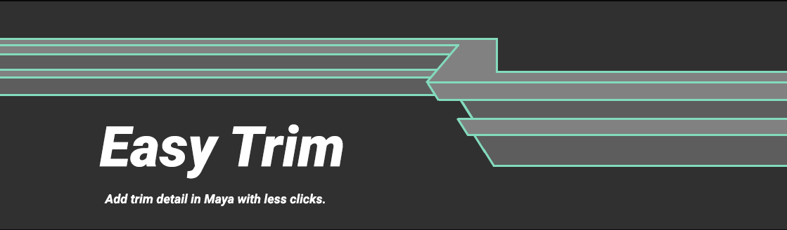
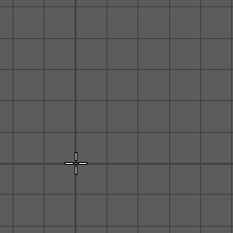
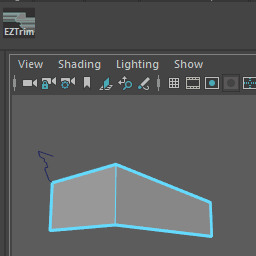
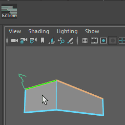
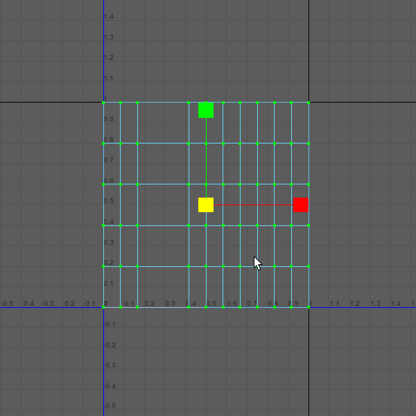
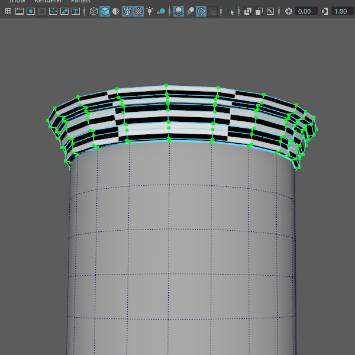
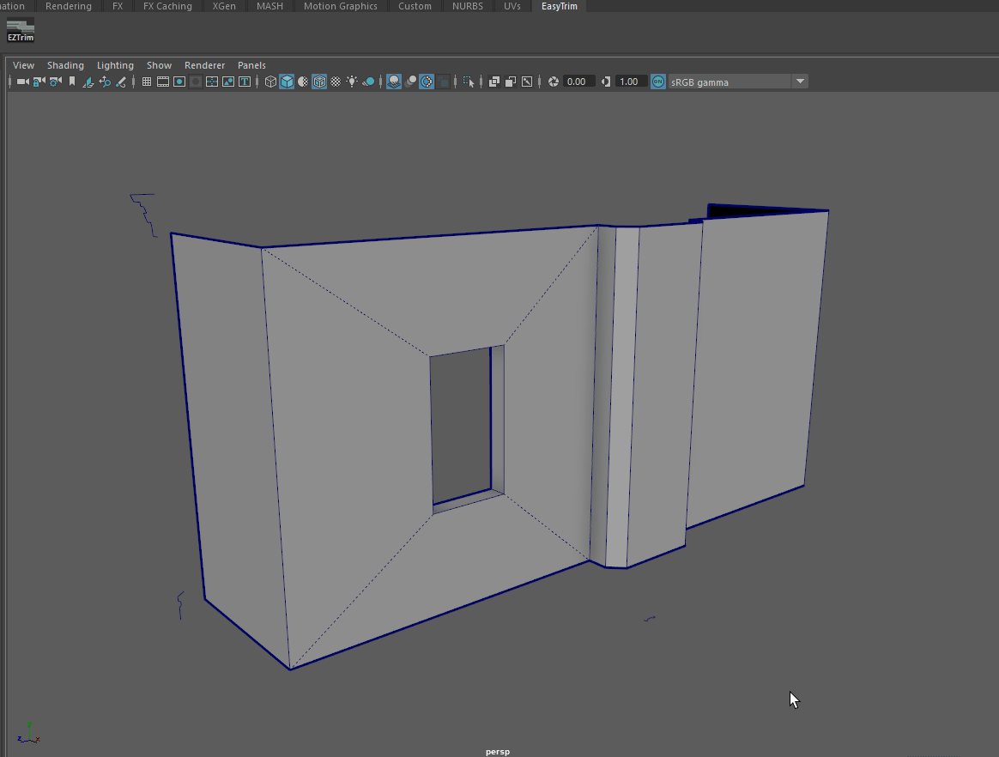
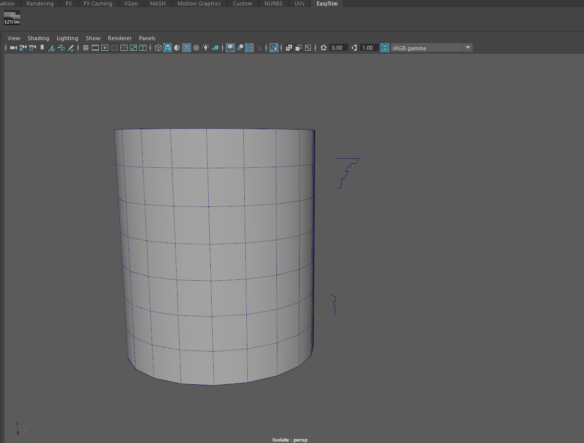
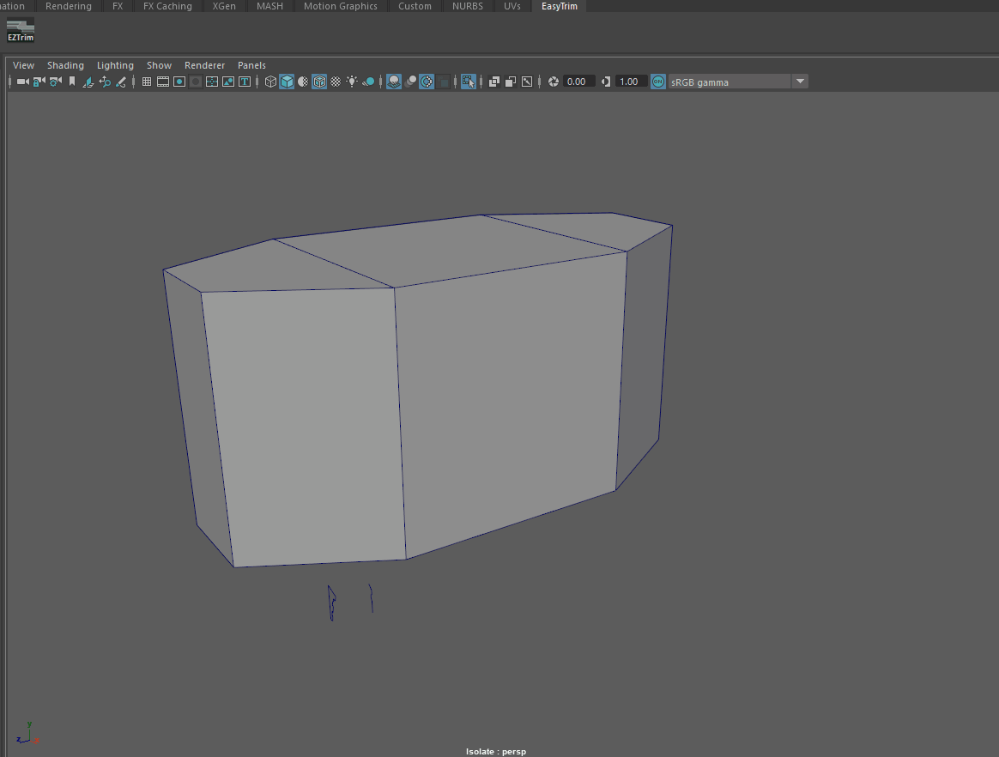
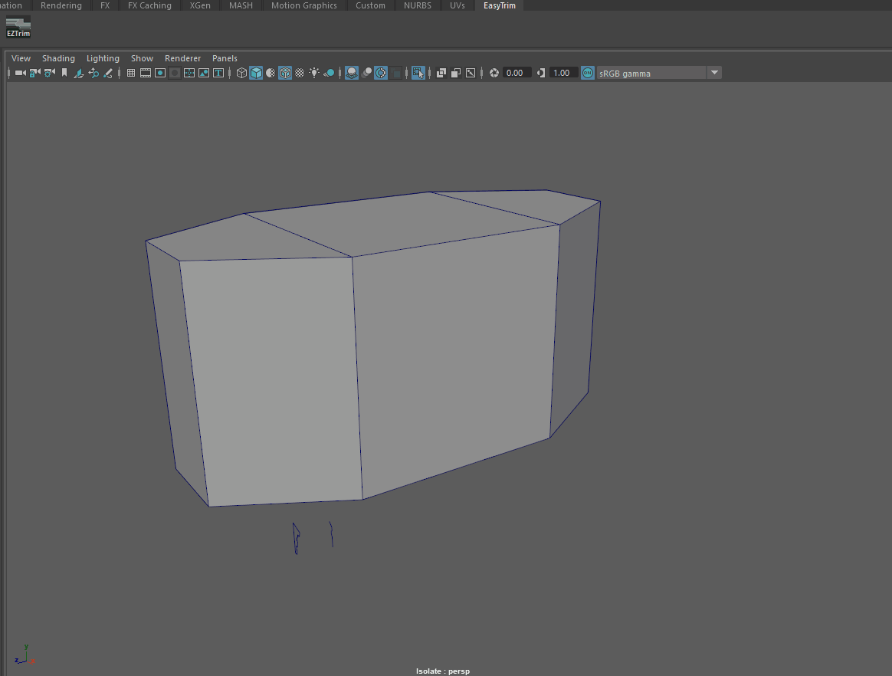

Define your profile, select your edges and immediately create trim detail in Maya with instant UVs.
I made this tool to help speed up the workflow for creating trim detail in Maya, primarily for environment artists. Hopefully this tool can make your life a little easier, whether you’re creating classical architecture or sci-fi designs.
To Use the Tool:
Step1:

Create your profile curve
Step2:

Select edges, then your profile
Step3:

Click the EZTrim button
UVs come for free, allowing the artist to easily scale and apply tiling trim textures.


The following gifs show some example modeling scenarios using Easy Trim:


 
